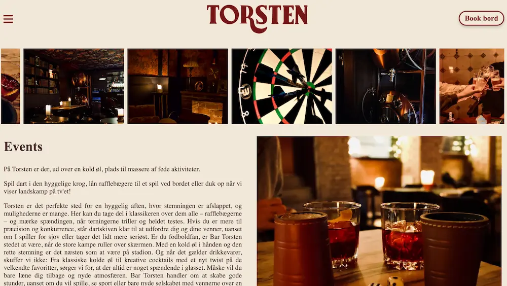
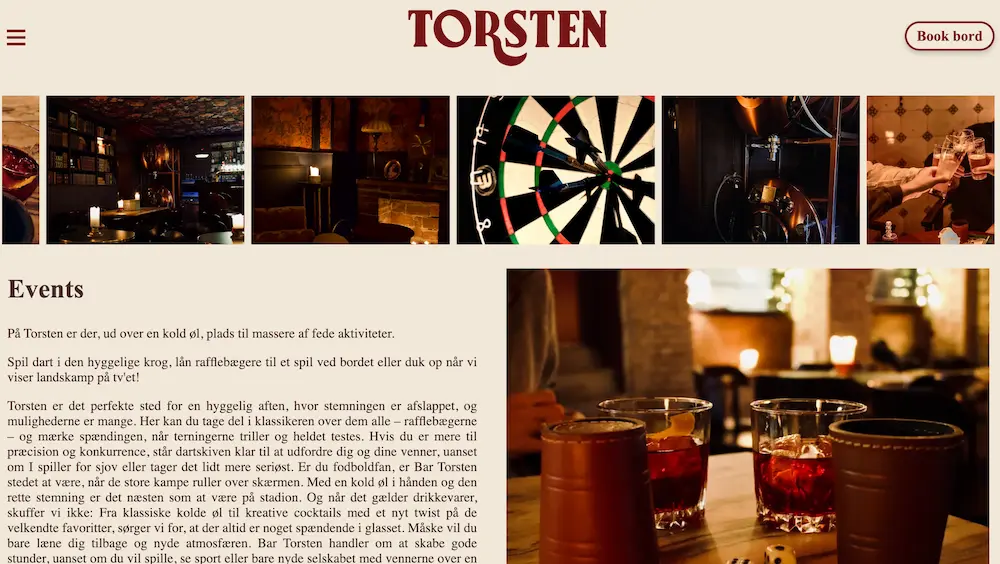

Tema 5
Grundlæggende indhold
Tema beskrivelse
I Tema 5 arbejdede vi med grundlæggende indhold, hvor vi lærte om videoredigering i Adobe Premiere Pro og om at skabe eget indhold gennem optagelser og billeder. Vi blev introduceret til LottieFiles og brugte det til at tilføje animationer. Som en del af temaet lavede vi et passionsite, hvor vi skulle portrættere en persons passion gennem selvproduceret indhold. Derudover designede vi et virksomhedssite, hvor vi fandt en virksomhed og arbejdede på at forbedre deres eksisterende hjemmeside. I dette projekt anvendte vi viden fra grundlæggende UX/UI og implementerede tests, som vi tidligere havde lært, for at sikre en bedre brugeroplevelse.
Videoklipning
I Tema 5 lærte jeg at skabe mit eget indhold ved selv at tage billeder og optage videoer, som vi senere redigerede i Adobe Premiere Pro. Her arbejdede vi med klippeøvelser for at forstå de grundlæggende teknikker i videoredigering. Denne viden anvendte vi senere til at udvikle passionsitet, hvor vi præsenterede en anden persons passion, og til virksomhedsitet, hvor vi skabte og forbedrede indhold for en rigtig virksomhed. Dette gav mig værdifuld erfaring med at kombinere kreativt indhold og tekniske redigeringsfærdigheder. Til højre kan man se min første klippeopgave.
Tema 5
Passionsite
I forbindelse med passionsitet arbejdede vi i grupper om at finde en person med en passion, som vi kunne interviewe. I vores gruppe valgte vi min kollega Anne Mette, der er pædagogmedhjælper og tidligere biolog med 25 års erfaring. Vi optog og klippede et interview med hende i Adobe Premiere Pro og brugte det som hovedindhold til at skabe et passionsite, der fremhævede hendes passion og karriereskifte. Projektet gav os erfaring med både videoredigering og processen med at skabe og præsentere originalt materiale.
Link til passionssite:
passionssiteLink til passionssvideo:
passionssvideoVirksomhedssite
I Tema 5 arbejdede vi også på et virksomhedssite, som vi lavede for baren Bar Torsten. Vores opgave var at forbedre deres hjemmeside ved at skabe nyt indhold, herunder selv at tage billeder og optage videomateriale, som vi efterfølgende redigerede og integrerede. Sitet blev kodet fra bunden med fokus på at fremhæve barens atmosfære og unikke kvaliteter. I denne proces brugte vi vores viden om UX/UI, blandt andet gennem tests som Lighthouse-test og Likert-skala, for at sikre en bedre brugeroplevelse og funktionalitet. Dette gav os praktisk erfaring med at kombinere design, udvikling og brugertests i et realistisk projekt.
Link til virksomhedssite:
Virksomhedssite 
